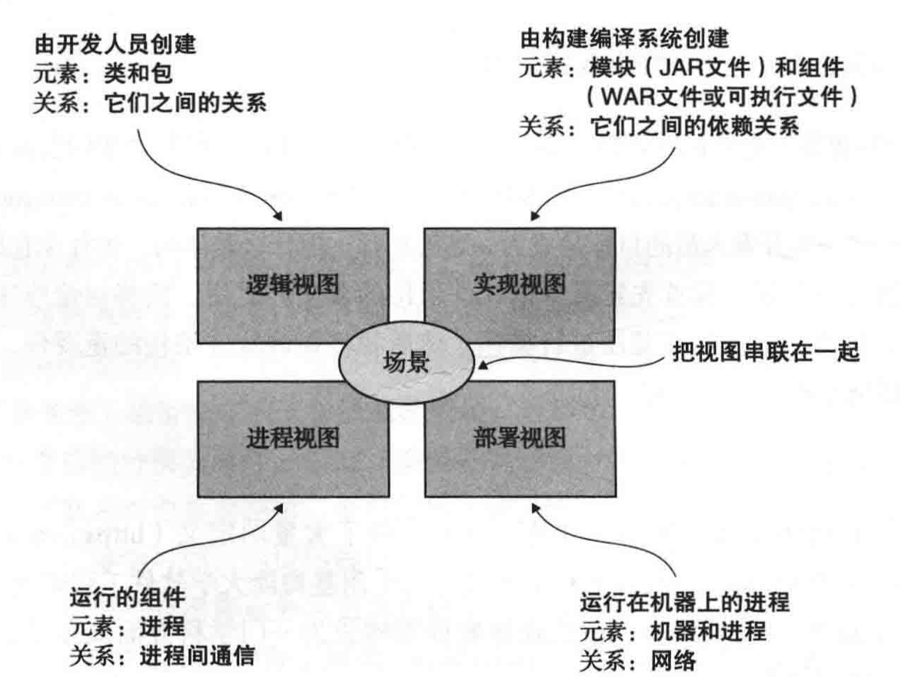
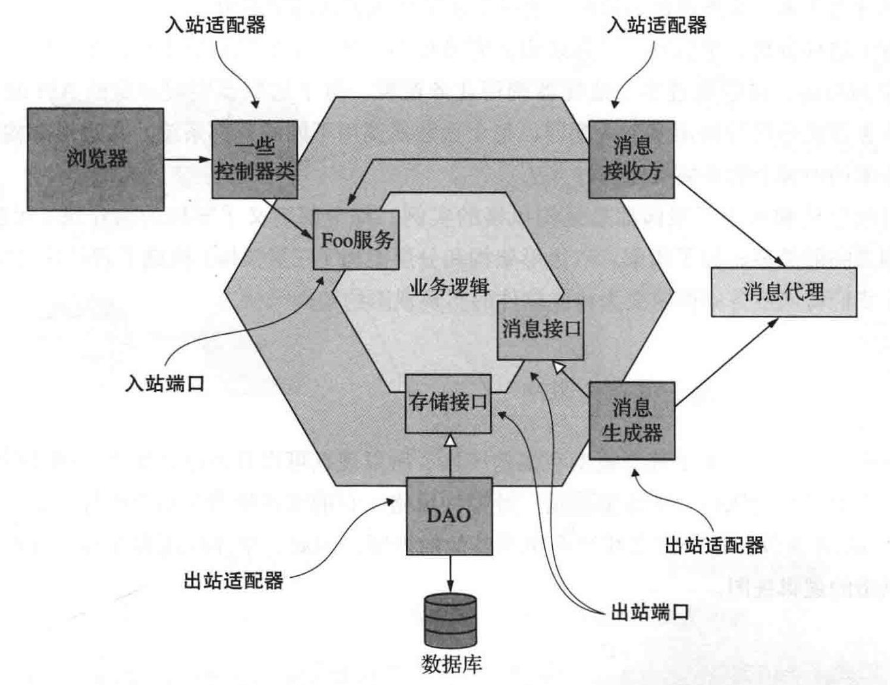
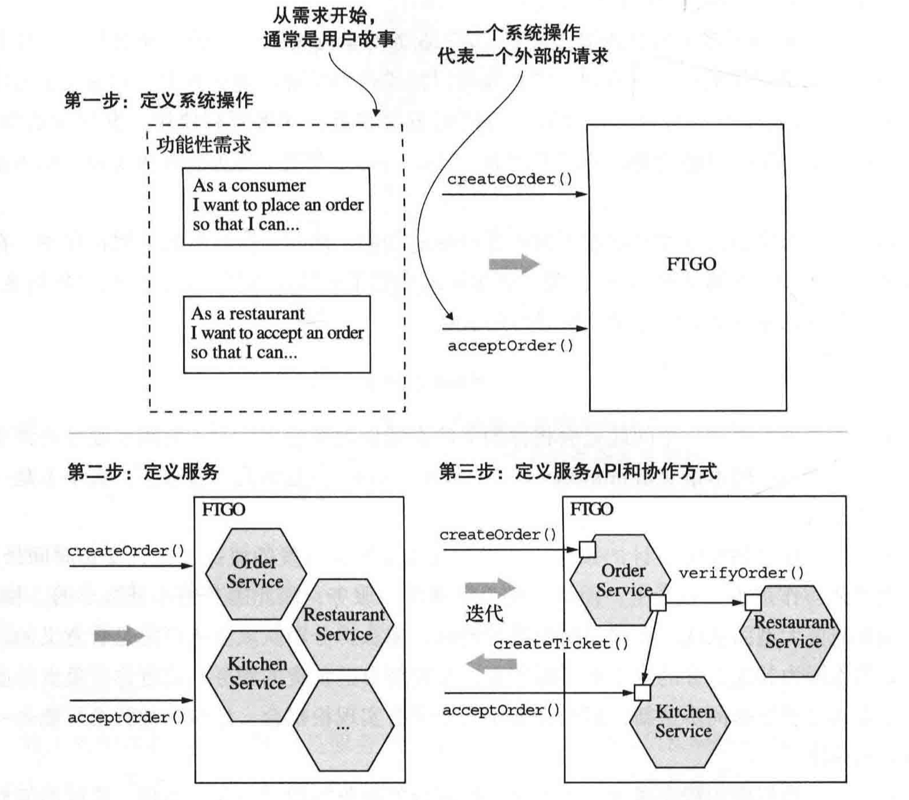
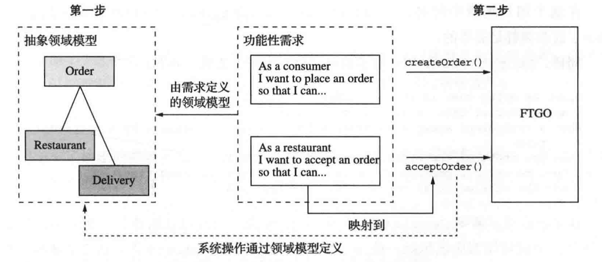

软件架构定义
抽象定义：计算机系统的软件架构是构建这个系统所需要的一组结构，包括软件元素、它们之间的关系以及两者的属性。
更容易理解的定义：应用程序的架构是将软件分解为元素（element）和这些元素之间的关系（relation）。
4+1 视图模型
应用程序的架构可以从多个视角来看：
- 逻辑视图：开发人员创建的软件元素。
- 实现视图：构建编译系统的输出。
- 进程视图：运行时的组件。
- 部署视图：进程如何映射到机器。
- +1 是指场景，它负责把视图串联在一起。

应用程序两个层面的需求
功能性需求：决定一个应用程序做什么。
非功能性需求：决定一个应用程序在运行时的质量。
六边形架构风格
六边形架构风格选择以业务逻辑为中心的方式组织逻辑视图。

出入站端口
- 入站端口的一个实例是服务接口，它定义服务的公共方法。
- 出站端口是业务逻辑调用外部系统的方式。
出入站适配器
- 入站适配器通过调用入站端口来处理来自外部世界的请求。
- Spring MVC Controller
- 订阅消息的消息代理客户端
- 出站适配器实现出站端口，并通过调用外部应用程序或服务处理来自业务逻辑的请求。
- 访问数据库的操作的数据访问对象（DAO)类
- 调用远程服务的代理类
- 发布事件
六边形架构风格的一个重要好处是它将业务逻辑与适配器中包含的表示层和数据访问层的逻辑分离开来。业务逻辑不依赖于表示层逻辑或数据访问层逻辑。
松耦合
松耦合服务是改善开发效率、提升可维护性和可测试性的关键。小的、松耦合的服务更容易被理解、修改和测试。
保证数据的私有属性是实现松耦合的前提之一。
服务的定义
服务是一个单一的、可独立部署的软件组件，它实现了一些有用的功能。
服务的 API 封装了其内部实现。
微服务架构模式
将应用程序构建为松耦合、可独立部署的一组服务。
定义应用程序架构的三步式流程：
- 定义系统操作
- 创建由关键类组成的抽象领域模型
- 用户故事中提及的名词
- 确定系统操作
- 用户故事中提及的动词
- 创建由关键类组成的抽象领域模型
- 定义分解服务
- 方法 1：采用业务能力进行服务拆分
- 方法 2：根据子域进行服务拆分
- 定义服务 API 和写作方式
定义应用程序架构过程图

定义系统操作过程图

服务分解后的几个障碍
- 网络延迟
- 可用性
- 数据一致性
- 上帝类
两类系统操作
- 命令型：创建、更新或删除数据的系统操作。
- 查询型：查询和读取数据的系统操作。
根据子域进行服务拆分
领域驱动为每一个子域定义单独的领域模型。
- 子域是领域的一部分
- 领域是 DDD 中用来描述应用程序问题域的一个术语
DDD 把领域模型的边界称为限界上下文（bounded context)。
我们可以通过 DDD 的方式定义子域，并把子域对应为每一个服务，这样就完成了微服务架构的设计工作。
微服务架构应遵循单一职责原则和闭包原则：
- 单一职责原则：设计小的、内聚的、仅仅含有单一职责的服务。这会缩小服务的大小并提升它的稳定性。
- 闭包原则：把根据同样原因进行变化的服务放在一个组件内。这样做可以控制服务的数量，当需求发生变化时，变更和部署也更加容易。理想情况下，一个变更只会影响一个团队和一个服务。